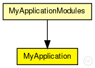
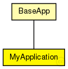

This documentation is released under the Creative Commons license
This documentation is released under the Creative Commons license(no description)
The following diagram shows usage relationships between types. Unresolved types are missing from the diagram. Click here to see the full picture.
The following diagram shows inheritance relationships for this type. Unresolved types are missing from the diagram. Click here to see the full picture.
| BaseApp (simple module) |
Base class for application implementations |
If a module type shows up more than once, that means it has been defined in more than one NED file.
| MyApplicationModules (compound module) | (no description) |
| Name | Type | Default value | Description |
|---|---|---|---|
| rpcUdpTimeout | double |
default timeout value for direct RPCs |
|
| rpcKeyTimeout | double |
default timeout value for routed RPCs |
|
| optimizeTimeouts | bool |
calculate timeouts from measured RTTs and network coordinates |
|
| rpcExponentialBackoff | bool |
if true, doubles the timeout for every retransmission |
|
| debugOutput | bool |
enable debug output |
|
| sendPeriod | int |
how much time to wait between sending packets |
|
| numToSend | int |
how many packets will we send at the same time? |
|
| largestKey | int |
largest key we can pick |
| Name | Value | Description |
|---|---|---|
| class | MyApplication | |
| display | i=block/app |
| Name | Direction | Size | Description |
|---|---|---|---|
| udpIn | input |
gate from the UDP layer |
|
| from_lowerTier | input |
gate from the lower tier |
|
| from_upperTier | input |
gate from the upper tier |
|
| direct_in | input |
gate for sendDirect |
|
| trace_in | input |
gate for trace file commands |
|
| tcpIn | input |
gate from the TCP layer |
|
| tcpOut | output |
gate to the TCP layer |
|
| udpOut | output |
gate to the UDP layer |
|
| to_lowerTier | output |
gate to the lower tier |
|
| to_upperTier | output |
gate to the upper tier |
simple MyApplication extends BaseApp { parameters: @class(MyApplication); int sendPeriod @unit(s); // how much time to wait between sending packets int numToSend; // how many packets will we send at the same time? int largestKey; // largest key we can pick }
This documentation is released under the Creative Commons license